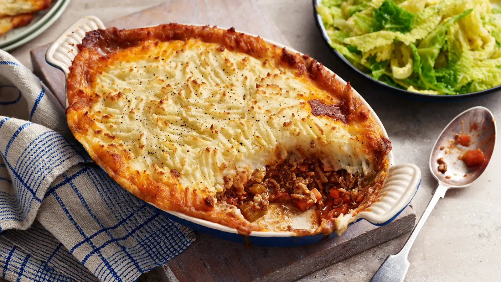

Cottage Pie

Description
This recipe details the ingredients necessary and outlines the steps required for making
cottage pie. The estimated times for this recipe are
35 minutes for preparation
and up to 1hr and 50 minutes for cooking
(2hr 25 minutes total).
Ingredients
- 3 tbsp olive oil
- 1 1/4 kg beef mince
- 2 onions
- 3 carrots
- 3 celery sticks
- 2 garlic cloves
- 3 tbsp plain flour
- 1 tbsp tomato puree
- 850ml beef stock
- 4 tbsp Worcestershire sauce
- Thyme
- 2 bay leaves
- 1.8kg chopped potatoes
- 225ml milk
- 200g grated cheddar cheese
- Grated nutmeg
Steps
- Heat 1 tbsp olive oil in wok and fry beef mince until browned (may need to be done in batches).
- Add the other 2 tbsp olive oil into the wok, add chopped onions, carrots and celery sticks
and cook on gentle heat until soft, for about 20 minutes.
- Add minced garlic, plain flour and tamoto puree, increase heat and cook for a few minutes,
then return cooked beef to the wok.
- Add beef stock, Worcestershire sauce, bay leaves and a few springs of thyme.
- Bring to simmer and cook uncovered for 45 minutes, or until the gravy is thick and coating
the meat. If a lot of liquid still remains after 30 minutes, increase heat slightly to reduce
gravy a little. Season well, then discard bay leaves and thyme stalks.
- In a large saucepan, cover chopped potatoes in salted cold water, bring to the boil and
simmer until tender.
- Drain well, then allow to steam-dry for a few minutes. Mash well with the milk, 25g butter, and
3/4 of the cheddar cheese, then season with grated nutmeg, salt and pepper.
- Spoon the meat into 2 ovenproof dishes. Pipe or spoon on the mash to cover. Sprinkle the
remaining cheese over the top.
- Heat oven to 220C/200C fan/gas and cook for 25-30 minutes, or until
the top is golden.
Home